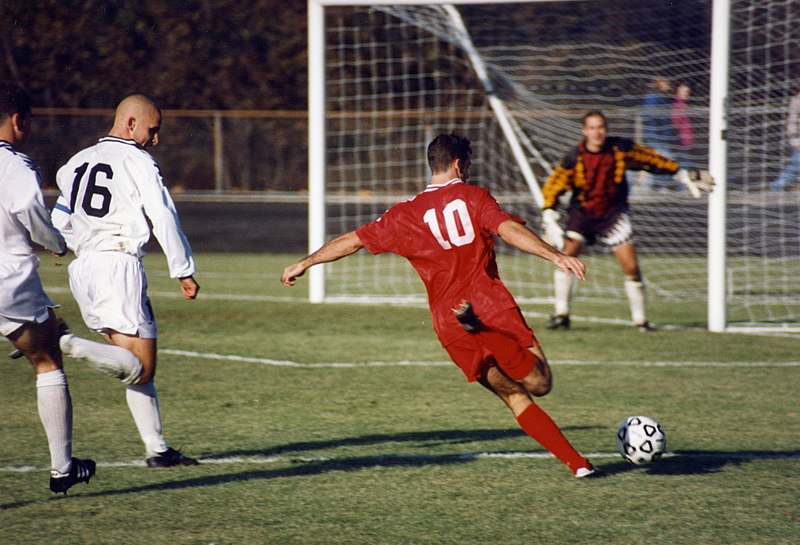

Association football (soccer), Bloomington, Indiana. The offensive player (in red) has sprinted past two defenders (in white) and is about to shoot the ball at the goal or pass it across the field to a teammate in front of the goal.

The football game has been graced by some of the most unparalleled talents over the years, but very few of them could be named in contention for the mantle of the god of football. So, who is the god of football? The answer would be
Argentinian footballer, Diego Maradona.
Football is played in accordance with a set of rules, known as the Laws of the Game.
Association football (soccer), Bloomington, Indiana. The offensive player (in red) has sprinted past two defenders (in white) and is about to shoot the ball at the goal or pass it across the field to a teammate in front of the goal.
The game is played using a single round ball (the football) and two teams of eleven players each compete to get the ball into the other team's goal, thereby scoring a goal. The team that has scored more goals at the end of the game is the winner; if both
teams have scored an equal number of goals, then the game is a draw.